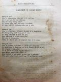

Languages
台文
｜
中文
｜
日本語
｜
English
字體
小
｜
中
｜
大
首頁
/
白話字數位典藏
白話字數位典藏全文檢索
查詢模式
選擇年代
清國時代(1885-1895)
日本時代(1895-1945)
戰後(1945-1969)
1885-1895
1896-1905
1906-1915
1916-1925
1926-1935
1936-1945
1946-1955
1956-1965
1966-1969
1970-1980
1980-1990
1990-2000
2000-2010
2010-
選擇文類
詩
散文
小說
戲劇
傳記
選擇作者
陳清忠
陳清義
編輯部
柯設偕
吳天命
明有德
偕叡廉
周天來
劉華義
王守勇
林茂生
陳添旺
王占魁
柯維思
賴仁聲
陳瓊琚
雪峰逸嵐
吳清鎰
郭水龍
蕭樂善
許水露
葉金木
陳金然
章王由
廖得
鄭連坤
潘道榮
楊士養
梁秀德
劉約翰
周淑慧
高金聲
林燕臣
黃六點
蔡愛義
許有才
主筆
巴克禮
郭朝成
陳鳩水
張基全
陳明清
陳能通
拾穗生
顏振聲
卓恆利
傳道局
胡文池
劉主安
鄭兒玉
Google Search
Yahoo Search
全部
刊名
標題
標題(教羅)
全文
全文(教羅)
作者
第55頁，共93頁(共1,848筆資料) 0.67562890052795sec
1
...
53
54
55
56
57
...
93
To Page
GO
文字列表
圖文列表
排序
日期
文類
刊名
作者
影像
[1926-7 芥菜子 文類-散文 作者-郭水龍/Keh Chuí-lêng]
(3)
修養會 [ Siu-ióng-hoē ]
修養會 北部傳教師修養會所經過的消息，時日有較迫袂得通將逐項攏寫；代先簡略後來會閣寫較詳細。 這pang來赴會的人有宣教師10名，牧師9名，傳道士 39名，宣道婦6名。 佇6月29暗各位傳教師攏到淡水中學。隔日就受試驗，主考牧師陳清義，郭希信，蕭安基，替試驗部共 in試驗。成績有分 3等，1等賞￥ 9.00 2等賞 ￥ 7.00 3等賞￥ 5.00。 對7月1日起開修養會，逐日頂晡半點鐘久做祈禱會，3點鐘久聽演講；下晡時一點鐘久練習吟詩。吳牧師娘來教，這pang新詩調出版，有真濟新調，逐人愛學袂siān。 ...
[1926-5 芥菜子 文類-散文 作者-郭水龍/Keh Chuí-lêng]
(2)
婦女tháu-pàng [ Hū-lú tháu-pàng ]
婦女tháu-pàng 現時男女平等的議論，毋但佇社會上宣傳地位、教育、權利、平等；就佇咱教會內閣較著代先開放；因為男女平等是人類同享的福氣。 1、婦女的地位。婦女的性受男性壓迫，彼个歷史有3000外年；若是稽考社會學，古早的社會用女性做主宰，就母系的時代，當時所生的囝兒只知有老母，毋知有老爸；因為老爸規年出外，囝兒罕得見伊的面；老母10月日懷胎，3年久飼奶，無一時離老母，老爸無擔當責任所以較毋bat--伊。後來家內人ná 濟，婦人人因為生育的關係，袂會出外趁食；一概所欠用的食穿攏對丈夫來，按呢可憐的婦人人失落獨立的氣力；就將母系變做父系；對遮漸漸失勢，做成一个無形...
[1926-8 芥菜子 文類-散文 作者-郭水龍/Keh Chuí-lêng]
(1)
諒解 [ Liōng-kái ]
諒解 芥菜子第 6號「喜出望外」欄內羅居的目睭內障的病。蘭醫生佮馬偕醫院無共伊手術是因為猶未熟，請列位著諒解。...
[1925-7 芥菜子 文類-散文 作者-郭水龍/Keh Chuí-lêng]
(4)
巡視東部教會 [ SÛN-SĪ TANG-PŌ͘ KÀU-HOĒ ]
巡視東部教會 佇5月7日我去巡花蓮港、台東2廳ê教會；也續佇花蓮港鳳林鬥做奮興會ê工。論花蓮港教會比2年前有khah活動，前ê傳道對天國ê事業無teh致意教會泠淡，失落亦無chhōa見，就現時猶有找無著ê會友無來禮拜。教會總數250名，戶數47戶；守禮拜80外名，主日學有40外ê。拜堂壁有淡薄歹，有題緣緊欲修理：會友聽見講拜堂欲換位毋甘，因為彼位真清休，也真高、真闊，街市有水害ê煩惱，捌淹2尺外高，所以官廳有做堤防teh保護；會友不止好趁食，袂艱苦，khah濟攏是前山搬去ê會友，是欠培養。 ...
[1931-8 台灣教會報/芥菜子 文類-傳記 作者-郭水龍/Keh Chuí-lêng]
張海水的小傳 [ Tiuⁿ Hái-chuí ê Sió-toān ]
張海水的小傳郭水龍1931.08, no. 557 (KCC, no. 67), pp. 20 木柵教會的長老張海水是貧寒的家庭出身，細漢的時父母就過身，伊予人倩做看牛囝仔，較大漢就共張弘做長工，伊看張Hông長老的熱心受感，後來娶某建立新家庭，果然熱心佇教會，勤免佇家庭，淡薄講較詳細。1. 伊對教會，熱心守禮拜，題捐攏是愛做模樣，所行守道理，教會就揀伊做長老，伊閣較盡職，會友若有破病逐日去看伊，幫贊伊，踮遐鬥照顧，閣較無閒亦撥工去，行到伊的病好chiah煞。 會友若有不和伊盡力勤和，有少年人去放蕩，伊去勸勉伊到家己流目屎；為著教會的事閣較無閒亦放工去做，若會友冷心，伊常常去引chhoā，若...
[1914-11 台灣教會報 文類-散文 作者-郭水龍/Keh Chuí-lêng]
斯文kap衛生 [ Su-bûn kap oē-seng ]
斯文kap衛生1914.11 356卷 p.8-9時勢變遷，文化日日進步，台灣ê人情風俗、道路、市區，合20年前大各樣。其中大進步就是斯文合衛生；百姓受文明ê教化那到，文明ê地位就衛生愈bat，亦政府衛生真嚴重。今好膽用這個大略來議論。 論斯文有內外ê分別；內是學問，外是外觀。舊清ê時代將漢學ê儒者叫做斯文，現時就bē堪--得講，且將學問下teh，免論，來論外觀ê斯文。1.言語世界中是台灣人ê粗嘴歹話thang推做第一歹。Tī講話ê時，歡喜ê時，受氣ê時，口頭語攏是歹話；談論ê時大聲喧嚷；無聽候別人講了就進前講，這是歹習慣無斯文。保羅講，聖徒無講姦淫浮漂戲hiauh ê話是合宜（以弗所5：4，...
[1926-11 芥菜子 文類-散文 作者-郭水龍/Keh Chuí-lêng]
(2)
馬偕醫院近訊 [ Má-kai i-īⁿ kūn-sìn ]
馬偕醫院近訊 這間病院的主旨全是救世的主義，規模雖然細細，實在佇台灣是無通比的好，內容設備逐項真次序，衛生真完全，用刀真經濟，人員真充足。戴博士、陸醫生、吳醫生，洪先生、西洋看護婦 4名本島看護婦 17名全病院人員共42名，現時病室有46張的眠床，閣teh起一棟小兒科的病室，眠床6張無外久會完工。 這个病院所設的法度真濟項是新思潮，理想tek佮別間病院無siâng款，有人看做奇怪紲嫌，照我看有真濟項的特色所以寫幾項說明予各位較諒解。 1、 救治thái-ko：這號病空前無醫藥無救治的法度，不幸染著thái-ko就絕望聽候死，現時來就醫thái-ko患者有117名。萬國thái...
[1926-12 芥菜子 文類-散文 作者-郭水龍/Keh Chuí-lêng]
(1)
馬偕醫院近訊 [ Má-kai i-īⁿ kūn-sìn ]
馬偕醫院近訊。 (紲接前號) 5、 入院的患者，－大人，囡仔攏有衫褲通予in穿，這真利便，病人毋免另外倩人洗衫。 6、 患者若較傷重毋予人去探伊。台灣人這項毋慣勢，實在是真著。我的某佮囝這擺拄著破病真傷重好轉來，講，當傷重的時有遮的親人，會友去看伊，伊真艱苦，問東問西真艱苦真毋愛，真無愛聽人講話，無聽啥物聲，恬恬倒較看活，2人所講相同，到今我才知，代先我毋知，所以寫批叫親人來看伊；醫生毋准in 會面我偷 chhoā in 去看，今知是毋著。 病院對閣開以來，各位的教會受不止利益，就遮个傳教師有的也得著真大利益，也有不止濟對醫病轉去紲信道理，看這个病院對病人盡力醫治照顧，對上帝道理出...
[1926-12 芥菜子 文類-散文 作者-郭水龍/Keh Chuí-lêng]
(2)
坪林教會新聞 [ Pîⁿ-nâ kàu-hoē sin-bûn ]
坪林教會新聞。 我這pài 巡坪林教會比舊年有進步重倍。 坪林的所在是內山，道路真oán-sia̍p，佇台北佮宜蘭 12舖的中間，船車袂得到。小街市有百姓300外人，山崙的百姓真sòng-hiong，在地米食無夠著配蕃薯，倚靠蕃薯較濟。4年前有設講義所，到今不止好成績，百姓真欣慕道理，現時有20 戶趁道理人數94名。這pang大人15名愛領洗禮接納9名閣囡仔5名鄭生姆這家有10人來teh禮拜，鄭生本反對，今逐禮拜有刁工來禮拜。這pang伊的大新婦領洗禮，代先入天國向望後日全家30人會攏趁道理。 教會teh進步的因端有幾若項。 1、 有上帝的神跡teh幫贊。這人名林火對細漢h...
[1927-2 芥菜子 文類-散文 作者-郭水龍/Keh Chuí-lêng]
(2)
北部拜堂建築改築 [ Pak-pō͘ pài-tn̂g Kiàn-tiok kái-tiok ]
北部拜堂建築改築 1926年度建築部有設法墩仔跤拜堂改築，已經好，有開￥ 1000.00左右。南庄移徙，有著內地人寄附 in 的禮拜堂予咱的教會用，也有閣修理￥ 1000.00左右。 頂雙溪有改築真次序。雙連新建築，已經完工，樓跤主日學教室，樓頂拜堂廳，不止好看，開有7000.00箍，總是無起傳道的宿舍。 新店拜堂現時建築中，因為有幾若項的阻礙，許可的 iân-chhiân；也有幾若位教會所寄附猶未交，若好天向望工事會大進行。 利澤簡也有改築，開 ￥ 300.00左右，近日暖暖教會也teh 請愛買一間店做拜堂，in欲負擔一半，總是猶未允准--in。 ...
[1927-2 芥菜子 文類-選擇文類 作者-郭水龍/Keh Chuí-lêng]
(2)
北部中會 [ Pak-pō͘ Tiong-hoē ]
北部中會 郭水龍 北部的中會2月13日下晡 2點鐘有聚集佇艋舺禮拜堂，來赴會宣教師4名牧師9名代議長老17名。 新議長牧師鍾天枝，新記事牧師、葉金木、張金波，掌數郭水龍照舊。 傳道局役員照舊，理事長換Kai Joē-lâm。 1、 佈道進行部照舊，另外派3名做專任佈道的工去逐位佈道。 2、 芥菜子編輯部佮台灣教會報編部合做一个編輯。 3、理事會請派2名佮in議論逐位拜堂欲設幼稚園。 4、 後回的新議案著2禮拜前寄交記事，然後通知議員。 5、派獨立的牧師巡視無獨立的同會。 水返跤同會 張金波 三角湧同會 ...
[1927-3 芥菜子 文類-選擇文類 作者-郭水龍/Keh Chuí-lêng]
(2)
訂正 [ Tèng-chèng ]
訂正 前號的 「芥菜子」第 15面「北部中會」記事中第 3 條 「理事會請派2名佮in議論逐位拜堂欲設幼稚園。」愛盲啞照下底 若是有拜堂希望愛設幼稚園-的，請in來佮幼稚園的部會參詳。...
[1925-6 台南府城教會報 文類-詩 作者-劉約翰/Lâu Iok-hān]
日過日 [ Ji̍t kè ji̍t ]
日過日 1925.06 第483卷 p.9-10 (劉約翰) 內心日日換新（II 林.3：16） 1.「日過日。」上帝啊！求你換新我。 用你祝福的活命； 「日過日。」上帝啊！求你扶持我， 用你的權力恩典的神。 2.「日過日。」救主啊！求你提攜我， 予你的奴僕意愛自由； 「日過日。」主啊！求你幫贊我， 予我會做你攏總的旨意。 3.「日過日。」救主啊！求你保持我， 抵抵踮佇你的疼痛； 孤單的倚靠佮順趁， 看到佇你的頂面。 4.「日過日。」救主啊！求你賞賜我， 我所大欠缺攏總的氣力； 閣用你佮你祝福的聖神， 永遠保守我佇你的感動。 5.「日過日。」來佮這個...
[1926-1 芥菜子 文類-散文 作者-劉約翰/Lâu Iok-hān]
(3)
基督教做成功Ê要素 [ KI-TOK-KÀU CHOÈ SÊNG-KONG Ê IÀU-SÒ͘ ]
基督教做成功Ê要素 深理kap淺理是對反，能力kap人力也無相同。求世界ê智慧是用人力，求靈界ê智慧是用靈力－就是用誠心祈禱得著神ê啟示－。小智慧是先知後來行，大智慧是先行後來知。求智慧時刻毋敢離開我，離開我就無主；信神時刻毋敢有我，就無神。所以人理是淺--ê，天理是深--ê；淺理用智，深理用信。 神kap人是相幫贊ê，神用人ê身軀來顯出道理人倚靠人ê力來成事。人ê力已經盡，靈ê力就來－哥林多後書12:9－10－盡力是人ê本份。職份&eci...
[1940-1 台灣教會公報/北部教會 文類-散文 作者-劉約翰/Lâu Iok-hān]
新的曙光 [ Sin ê Sū-kong ]
新的曙光 劉約翰 194001 658號 p.24-25 日子真快過，舊年連鞭過了，新年閣來。「啊！時間啊！！你怎樣遐緊，攏無聽候咧，做你直直走，直直去，濟濟人予你逼到欲佮你絕交，實在你真正無情。」這是我對時間的緊的卑感來對時間講的話。冊裡講，「日月如梭，光陰似箭」。日月親像經布的梭仔，光陰親像箭咧射遐爾緊。記得舊年一年宛然是凊凊經過一日若定。總是咱若回顧佇舊年一年間的經過，就會知咱有虛度濟濟的光陰。上帝賞賜咱逐人的時間，有的較長，有的較短，這通講是做咱的寶貝，也是做咱的活命。人無保惜伊的寶貝，仔是活命是到極的殘念。今舊年已經過去了袂通閣得著，若是新的年閣咧來，咱佇這個新年頭時間是新的，...
[1940-3 台灣教會公報/北部教會 文類-散文 作者-劉約翰/Lâu Iok-hān]
這片的雲 [ Chit phìⁿ ê hûn ]
這片的雲 劉約翰 194003 170號 p.23-23 1. 早時曾子講，「吾日三省吾身」，就是我一日三擺省察我的身軀。若是トルストイ講，「你佇一日若會干焦用一點鐘久來做你的所想，就你欲成做一个思想家。設使咱若猶原佇一日會干焦用一點鐘久來想主的事佮主靈交，就咱會成做一个信仰的熱心家。 2. 現代人是傷無閒，也是傷貧惰。所毋應該做的...熱狂咧做，若是所應該做的...就貧惰厭siān。 3. 教會若欲興起著欠用殉教者，抑是犧牲者。教會若愈受迫害，就愈閣得著進步。樹仔愈受大風搖捒，就伊的根愈深。 4. 世界充滿白賊，虛guî，不信，背約。若是上帝的恩典...
[1941-1 台灣教會公報/北部教會 文類-散文 作者-劉約翰/Lâu Iok-hān]
迎接新年 [ Ngiâ-chih Sin-nî ]
迎接新年 劉約翰 1941年1月 670期 18-19 新年恭喜：日子真快過，舊年liâm-piⁿ過了，新年又閣到。Hông-kí 2600年已經佇後面，teh來的就是新世紀的新年。佇這个新世紀的新年，咱會通徛teh來迎接......這个kiám毋是咱的天父的鴻恩mah？咱佇舊年雖然有拄著濟濟的艱難，困苦，種種的逆境，iáu-kú上帝的疼無離開咱，佮咱相佮佇teh，予咱會撥開bān-lān來迎接新的年月。咱kiám毋著大大感謝呵咾咱的天父！ 今仔日的時代通講是多端多事的時，咱佇這个時下來迎接這个新世紀的新年，佇這个新的前途毋知有loā濟咱所oh得擔當新的...
[1941-3 台灣教會公報/北部教會 文類-散文 作者-劉約翰/Lâu Iok-hān]
真的建設 [ Chin ê Kiàn-siat ]
真的建設 劉約翰 1941年3月672期 23-25 上帝予咱來這世間，是愛咱逐人著做一个建設佮完成的人，伊有將這款的使命予咱。總是咱袂會盡這款的使命來做成這款的人，m̄-nā袂會，反轉咱是做一个破壞者，為著按呢，主耶穌伊著降臨這世間，伊講，「我來毋是欲廢無，是欲應驗」。換話來講，「我來毋是欲破壞，是欲建設。」主耶穌看咱無力通做一个建設者，完成者，所以伊著來替咱kiat-設，替咱完成，按呢伊來世間毋是做這破壞者，就是做一个建設者。伊講，「我實在共恁講，就到天地廢無，律法的一點，一ui̍h ia̍h決斷袂廢無，到攏總成。」 基督教就是這款的宗教，有人講基督教無合佇咱的...

[1925-10 芥菜子 文類-散文 作者-劉約翰/Lâu Iok-hān]
(1)
活命Ê源頭 [ OA̍H-MIĀ Ê GOÂN-THÂU ]
活命Ê源頭 上帝ah！我佇夢中聽見你ê聲音，你ê聲音柔koh清；我對夢中醒你chhōa我到活命ê路上，你用歡喜充滿我ê心。 上帝ah！我佇烏暗地ê時陣，得著你ê光明，你ê光明照光我ê心，你用活命ê水洗我，用活命ê米糧飼我；予我有精神，走，你指導我所應該走ê路站。 上帝ah！我佇憂悶ê時陣，你安慰我靈魂；你安慰我ê靈魂時第一慈悲微細ê聲，你是我ê活命，你是我ê活命ê源泉；我毋敢...
[1925-10 芥菜子 文類-散文 作者-劉約翰/Lâu Iok-hān]
(4)
基督徒著怎樣奮鬥 [ KI-TOK-TÔ͘ TIO̍H CHÁIN-IŪN HÙN-TÒ͘ ]
基督徒著怎樣奮鬥 簡略分5項來論：－1. 事業上ê奮鬥，2. 學術上ê奮鬥，3. 環境上ê奮鬥，4. 人格上ê奮鬥，5. 真道上ê奮鬥，這世間就是戰場，人就是內中ê兵士，若是ài得著得勝，的確著ài出力奮鬥。達爾文有講「袂奮鬥--ê就輸」奮鬥是啥物？就是現在ê咱，向前要求咱ê生活，改造四圍，以及去應困難。一般ê世人用奮鬥做要緊，咱做基督徒kiám thang踮踮teh坐？基督徒若袂會奮鬥來引chhōa社會入新ê生活，...
第55頁，共93頁(共1,848筆資料)
1
...
53
54
55
56
57
...
93
To Page
GO
數位典藏國家型科技計劃
拓展台灣數位典藏計畫
版權所有 國立台灣師範大學 台灣文化及語言文學研究所©2008
10610 台北市和平東路一段162號│TEL 02-7734-5516│Fax 02-2358-2461
計劃簡介
典藏特色
執行架構
計畫典藏數位化流程
成員介紹
台灣白話字發展簡介
巴克禮牧師與《台灣教會公報》
廈門話字典-杜嘉德
白話字教學-打馬字
中國南方白話字發展
台灣基督教長老教會簡表
台灣基督教長老教會教會歷史委員會
《北部台灣基督長老教會教會ê歷史》
關於陳清忠
白話字文學：台灣文學的早春